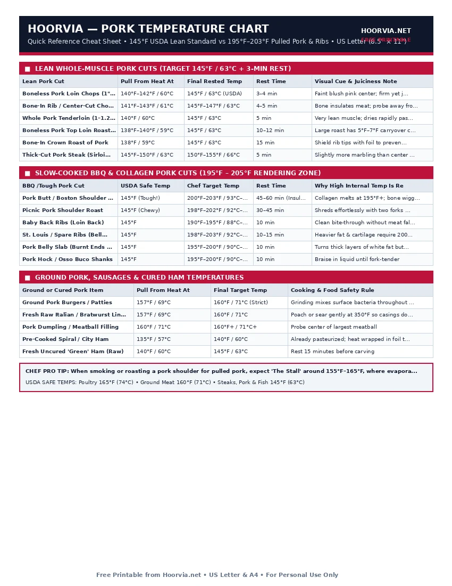

Pork Internal Temperature Chart (Lean Cuts vs BBQ Collagen Cuts)
For decades, home cooks overcooked pork chops to 160°F or 170°F out of outdated food-safety fears, resulting in dry, sawdust-like meat. In 2011, the USDA updated the safe minimum temperature for whole muscle pork cuts to 145°F (63°C) followed by a 3-minute rest. Meanwhile, tough barbecue cuts like pork shoulder and ribs must be cooked past 195°F (90°C) so stubborn collagen melts into gelatin.
| Lean Pork Cut | Pull From Heat At | Final Rested Temp | Rest Time | Visual Cue & Juiciness Note |
|---|---|---|---|---|
| Boneless Pork Loin Chops (1" thick) | 140°F–142°F / 60°C | 145°F / 63°C (USDA) | 3–4 min | Faint blush pink center; firm yet juicy |
| Bone-In Rib / Center-Cut Chops | 141°F–143°F / 61°C | 145°F–147°F / 63°C | 4–5 min | Bone insulates meat; probe away from bone |
| Whole Pork Tenderloin (1–1.25 lb) | 140°F / 60°C | 145°F / 63°C | 5 min | Very lean muscle; dries rapidly past 150°F |
| Boneless Pork Top Loin Roast (2–4 lb) | 138°F–140°F / 59°C | 145°F / 63°C | 10–12 min | Large roast has 5°F–7°F carryover climb |
| Bone-In Crown Roast of Pork | 138°F / 59°C | 145°F / 63°C | 15 min | Shield rib tips with foil to prevent charring |
| Thick-Cut Pork Steak (Sirloin) | 145°F–150°F / 63°C | 150°F–155°F / 66°C | 5 min | Slightly more marbling than center loin |
| BBQ /Tough Pork Cut | USDA Safe Temp | Chef Target Temp | Rest Time | Why High Internal Temp Is Required |
|---|---|---|---|---|
| Pork Butt / Boston Shoulder (Pulled) | 145°F (Tough!) | 200°F–203°F / 93°C–95°C | 45–60 min (Insulated) | Collagen melts at 195°F+; bone wiggles free |
| Picnic Pork Shoulder Roast | 145°F (Chewy) | 198°F–202°F / 92°C–94°C | 30–45 min | Shreds effortlessly with two forks at 200°F |
| Baby Back Ribs (Loin Back) | 145°F | 190°F–195°F / 88°C–90°C | 10 min | Clean bite-through without meat falling off |
| St. Louis / Spare Ribs (Belly Side) | 145°F | 198°F–203°F / 92°C–95°C | 10–15 min | Heavier fat & cartilage require 200°F render |
| Pork Belly Slab (Burnt Ends / Roast) | 145°F | 195°F–200°F / 90°C–93°C | 10 min | Turns thick layers of white fat buttery soft |
| Pork Hock / Osso Buco Shanks | 145°F | 195°F–200°F / 90°C–93°C | 10 min | Braise in liquid until fork-tender |
| Ground or Cured Pork Item | Pull From Heat At | Final Target Temp | Cooking & Food Safety Rule |
|---|---|---|---|
| Ground Pork Burgers / Patties | 157°F / 69°C | 160°F / 71°C (Strict) | Grinding mixes surface bacteria throughout meat |
| Fresh Raw Italian / Bratwurst Links | 157°F / 69°C | 160°F / 71°C | Poach or sear gently at 350°F so casings don't burst |
| Pork Dumpling / Meatball Filling | 160°F / 71°C | 160°F+ / 71°C+ | Probe center of largest meatball |
| Pre-Cooked Spiral / City Ham | 135°F / 57°C | 140°F / 60°C | Already pasteurized; heat wrapped in foil to stay moist |
| Fresh Uncured 'Green' Ham (Raw) | 140°F / 60°C | 145°F / 63°C | Rest 15 minutes before carving |
Printable Cheat Sheet Preview (US Letter & A4)
High-contrast, ink-saving layout designed for kitchen binders, grill stations, and refrigerator doors. No sign-up required.

The Two Worlds of Pork: 145°F Loin Cuts vs. 203°F Barbecue Cuts
No other meat confuses home cooks more than pork, because pork cuts come from two completely opposite muscle groups that require a 58°F difference in finishing temperature:
1. Why Modern Pork Chops & Tenderloin Must Be Pulled at 140°F–142°F
Selective breeding over the last 40 years reduced the intramuscular fat in commercial pork loins by over 50%. Because loin chops and tenderloins are just as lean as skinless chicken breast, cooking them to the old-fashioned 160°F threshold squeezes out every drop of moisture. When pulled at 140°F–142°F and rested for 3 to 5 minutes, carryover heat brings the center to the USDA-certified 145°F (63°C)—leaving the pork blush-pink, tender, and completely safe.
2. Why Pulled Pork & Ribs Need 195°F to 203°F
Hard-working shoulder and rib muscles are laced with dense webs of collagen and fat. At 145°F, a pork butt is technically safe to eat, but it is tough as shoe leather and impossible to shred. Between 185°F and 203°F (85°C–95°C), collagen unravels into liquid gelatin, lubricating the muscle strands so you can pull the shoulder apart effortlessly by hand.
Frequently Asked Questions
Is it really safe to eat pork chops that are slightly pink in the middle?
Yes! The USDA Food Safety and Inspection Service (FSIS) confirms that whole-muscle pork cooked to 145°F with a 3-minute rest is 100% safe, even if the center retains a rosy pink hue.
Why do ground pork and sausages need 160°F when pork chops only need 145°F?
On a whole pork chop, any surface bacteria sit strictly on the outside and are killed the instant the meat hits a hot pan. When pork is ground into sausage or burgers, those exterior surfaces are mixed into the center, requiring 160°F (71°C) all the way through.
How do I check ribs for doneness if the bones are too thin for a thermometer?
Alongside probing between the bones for 195°F–200°F, use the 'Bend Test': pick up the slab of ribs at one end with tongs. If the rack bends at a 45-to-90-degree angle and the surface bark cracks slightly without breaking in half, they are ready.
Meat, Poultry & Seafood Temperature Reference Series
- 🥩 Master Meat Internal Temperature Chart (#021)
- 🥩 Steak Doneness Chart: Pull vs Target Temps (#022)
- 🥩 Chicken Temperature Chart: White vs Dark Meat (#023)
- 🥩 Turkey Temperature & Roasting Time Guide (#024)
- 🥩 Ground Meat Internal Temperature Chart (#026)
- 🥩 Fish & Shellfish Internal Temperature Chart (#027)